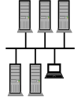
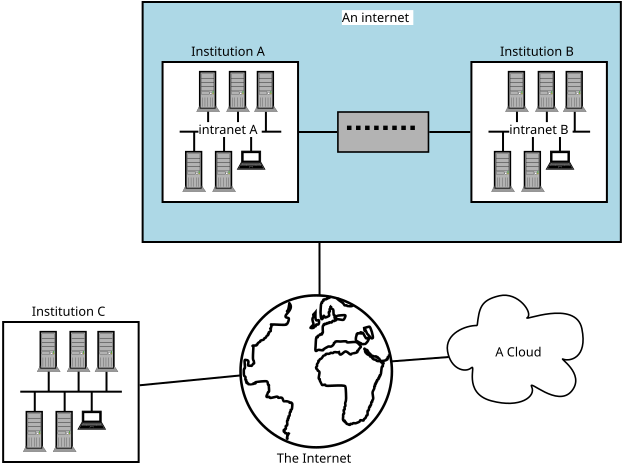
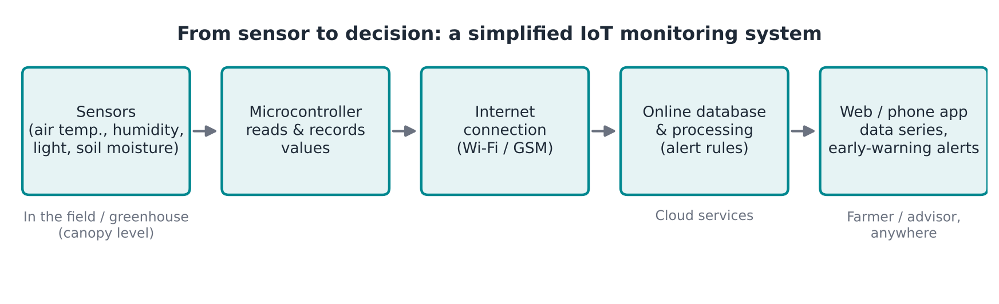

Intro to IoT for Horticulture and Open Source
Last updated on 2026-11-05 | Edit this page
Estimated time: 45 minutes
Overview
Questions
- What is the Internet of Things (IoT)?
- Can open-source technology and IoT bring precision agriculture to smallholder farmers?
- How does an electronic sensor turn the environment into data?
- What does a complete IoT monitoring system look like?
- Why does owning the technology and the data matter?
Objectives
- Explain how crop-specific environmental needs lead to science-based advice
- Describe how a sensor converts an environmental parameter into a measurable signal
- Explain what the Internet of Things is, and the basic network terms behind it
- Outline the parts of an IoT system, from sensor to alert
- Compare the benefits and limitations of proprietary and open-source systems
Note: for development and illustration purposes, some content in this episode has been copied verbatim from the Carpentries Incubator lesson Introduction to the Internet of Things (iot-novice).
The guiding question
This lesson introduces the use of Internet of Things (IoT) devices in the agrifood sector. Throughout the course we keep coming back to one question:
Will open-source technology and IoT popularize precision agriculture among smallholder farmers?
To answer it, we need to understand how the technology works, so that we can adapt it to the challenges and projects we work on in agrifood systems (AFS) and horticulture. That is why we start by stepping back to the basics: understanding the building blocks is what allows us to make a leap later.
From plant needs to science-based advice
Plants respond to their environment, and different crops have different environmental needs. Take a single parameter, temperature:
| Crop | At 25 °C |
|---|---|
| Broccoli | In its “dead zone”: poor growth |
| Maize | Good growing conditions |

Matching what a crop needs with the conditions actually measured is, in a nutshell, how science-based advice works.
From theory to practice: electronic sensors
How do we know the real conditions in a specific field or greenhouse? An electronic sensor focuses on one parameter and makes something intangible (temperature, humidity, pH) measurable by converting it into an electrical signal.
The principle is simple. A microcontroller sends a known voltage through a circuit that includes the sensor. When the parameter changes, the sensor changes that voltage, for example from 4 V to 3.8 V. The microcontroller measures the difference and, using the sensor’s known response (its calibration), converts it into a value such as °C or % humidity.
Isolating the violin
The environment is complex: many things happen at the same time. A sensor lets us isolate one parameter from that complexity, like listening to an orchestra and choosing to hear only the violin.
The same principle applies far beyond horticulture: aquaculture, livestock and poultry farming, and even home automation (domotics).
What sensors can tell us
One parameter, one agronomic meaning
Humidity influences water uptake, transpiration and the development of pathogens. These in turn affect how much a crop produces, and therefore how much the farmer earns.
Several parameters combined
By combining light intensity, temperature and humidity, and comparing them with the known conditions that favour pests and diseases (for example fungal diseases), a system can trigger an alert when the risk is high.
The fourth factor: time
A single reading tells us what is happening now. But what about yesterday? Fungal diseases often become visible only after the crop is already infected. If something had been measuring constantly, we could have had an early warning. This is why we automate the recording of parameters, and connect our sensors to the Internet.
The Internet of Things
You might hear “Internet of Things” (IoT) and Arduino mentioned together and often those terms are used as if the one implies the other. However, this is not the case. The Internet of Things refers to all kinds of “Things” that have been connected to the Internet. Often, this includes sensing the environment. You can almost think of IoT as the five senses of the Internet.
Before we continue, we should clarify some key terminology used in networking. When two or more computers are connected such that they can communicate it is called a network.
LAN
When computers are connected together as in the below diagram, we call this a “Local Area Network”, or LAN. This is how the computers within a university campus, or within a farm office and its greenhouses, are connected. You may hear this referred to as the institution’s intranet. All the computers inside it can talk to each other, but computers outside the LAN cannot talk to them.

WAN
A LAN is often connected to other telecommunications networks. The network of university networks in the UK is called “Janet”: this allows institutions to talk to each other. This forms a “Wide Area Network” or WAN, as it spans a much larger geographic distance. This network may also be referred to as an internet but is not the same as The Internet.

“The Internet” versus “an internet”
An “internet” (with a lower case i) and “The Internet” (with an upper case I) are different! With an upper case I, The Internet refers to the wide area network that we connect to view web pages such as Google, Amazon etc, or to which we connect to make Zoom or Skype calls. The Internet is a worldwide collection of networks that we are able to connect to via our Internet Service Providers.
With a lower case i, internet refers to a collection of networks that are connected: a contraction of the phrase “interconnected network”. If university A has a network on campus, and university B has a network, and they decide to connect the two networks as a WAN, then they would have an internet. However they might not necessarily be connected to The Internet.
Challenge: network basics
- What is a network?
- What is an intranet?
- What is the Internet?
- What is the difference between a LAN and a WAN?
- Network: a group of computers connected together. This can be via wires (electrically); microwaves (radio); or fibre optic (light).
- Intranet: a network of computers, such as the one connecting machines within the University to each other.
- The Internet: the network of networks, which connects computers across the globe together.
- A Local Area Network is situated in a small geographic area. A Wide Area Network may span countries, or even the globe. We are even starting to have PANs (Planetary Area Networks)!
From sensor to alert: how an IoT system works
Putting sensors and networks together gives us a complete IoT monitoring system:

- Sensors measure the parameters in the field or greenhouse.
- A microcontroller reads and records the values automatically.
- The device connects to the internet and saves the data online.
- An online program processes the data and triggers alerts. Historical data can be reviewed, and combined with forecasting models.
- An app gives the user access to the data from anywhere: the farmer, but also an extension officer working remotely.

The Cloud
Steps 4 and 5 usually happen “in the cloud”. You may have heard of The Cloud. The cloud refers to a collection of many, many computers which provide services and resources on the Internet. These machines might be physically located in datacentres all over the globe, but the network between them is designed to be as invisible as possible to you. We often don’t care where the computer running a service in the cloud physically resides, as long as the service is reliable and can be accessed from the Internet.
This ephemerality is why we talk about services as if they are in a “cloud”: the computers and the services they run are like droplets of water floating in the sky. There are also multiple clouds in the “sky”: some operated by technology companies, others smaller, such as private clouds hosted by individual institutions or companies for reasons including cost and security.
Not a replacement for the field
Farmers still need to walk their fields. IoT adds a layer of information that supports data-driven decision-making, for example by letting you go back and see what happened in the days before a problem appeared.
Challenge: which of the following are part of the Internet of Things?
With the person next to you, discuss whether you think the following devices are part of the Internet of Things, and why. What other devices do you think would be part of the Internet of Things?
- A computer
- An Arduino
- A traffic camera
- A device publishing current temperature to the Internet
- A smart phone
- A computer is connected to the Internet, but it is a general-purpose machine rather than a “thing” sensing its environment. Usually not counted as IoT.
- An Arduino on its own has no Internet connection, so it is not part of the IoT. It becomes part of it once it is connected.
- A traffic camera that sends images or counts over the network is a typical IoT device.
- A device publishing current temperature to the Internet is the classic IoT example, and exactly what we will build.
- A smart phone is debatable: it is full of sensors and connected, but it is also a general-purpose computer. It often acts as the gateway between IoT devices and their users.
Where we are going
The system above is a finished product. Over the next lessons we will build up to it step by step, through theory and practical exercises: how to code, how to wire, and the basics of electronics. At the end of the series, participants will be able to set up, control and maintain their own sensor networks.
Two principles guide the way:
- Always focus on the final result. There are many ways to solve a problem in code; what matters is that the solution works.
- From hobby to field. A prototype that works on a desk is not enough. Our goal is a device that survives the field environment: heat, cold and daily swings in humidity.
Proprietary and open-source approaches
IoT devices and the platforms behind them can be proprietary (bought as a closed product or service) or open source. Why do we choose open source?
- Owning the data we produce, instead of only being able to consult it through a provider’s service.
- Decentralized production: local small businesses can develop, install and support these devices close to the farmers who use them.
The trade-off: with open source, someone needs the skills to build, install and maintain the devices. That is exactly what this course is for.
Figures quoted in the session: a commercial monitoring box costs around €800–1,000, or about €50 with a subscription in which the farmer does not own the data. A self-built open-source device costs less than $200 in parts (excluding labour, installation and maintenance).
Challenge: your first sensor
Think of a crop or production system you work with.
- Which single parameter would you measure first?
- What decision would that measurement support?
- What would a useful alert say, and who should receive it?
Greenhouse tomatoes: measure air humidity at canopy level. Long periods of high humidity favour fungal diseases. An alert such as “Humidity above the risk threshold for the last 6 hours: ventilate and inspect” would go to the farmer and the extension officer.
- Different crops need different conditions; matching needs with measurements is the basis of science-based advice.
- A sensor isolates one parameter and converts it into an electrical signal a microcontroller can measure.
- Combining parameters over time enables early-warning alerts.
- The Internet of Things is all kinds of “things” connected to the Internet, often sensing their environment.
- An IoT system links sensors, a microcontroller, online (cloud) storage and processing, and a user app.
- Open source lets farmers and local businesses own the technology and the data, but requires the skills to build and maintain it.